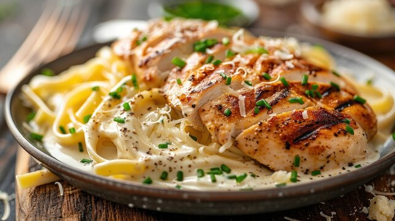

Chicken Alfredo

Description
A quick and easy chicken alfredo dinner with broccoli, zucchini, and red bell pepper. The sauce is enriched by cream cheese.
Ingredients
- fettucine pasta
- cream cheese
- butter
- milk
- garlic powder
- salt and pepper
- chicken breast
- broccoli
- zucchini
- red bell pepper
- parmesan cheese
Steps
- Bring a large pot of lightly salted water to a boil. Add pasta, and cook for 8 to 10 minutes, or until al dente; drain.
- While pasta is cooking, melt cream cheese and butter in a skillet over low heat. Stir until smooth. Stir in milk, and season with garlic powder, salt, and pepper. Simmer for 3 minutes, or until thickened, stirring constantly.
- Mix in chicken, broccoli, zucchini, and red pepper. Cook 3 minutes over medium heat, then reduce heat, and simmer 5 minutes, or until vegetables are tender. Serve hot over fettuccine and top with grated Parmesan cheese.
Home